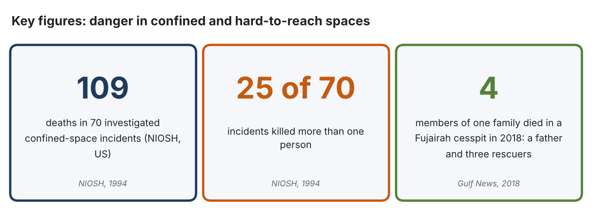
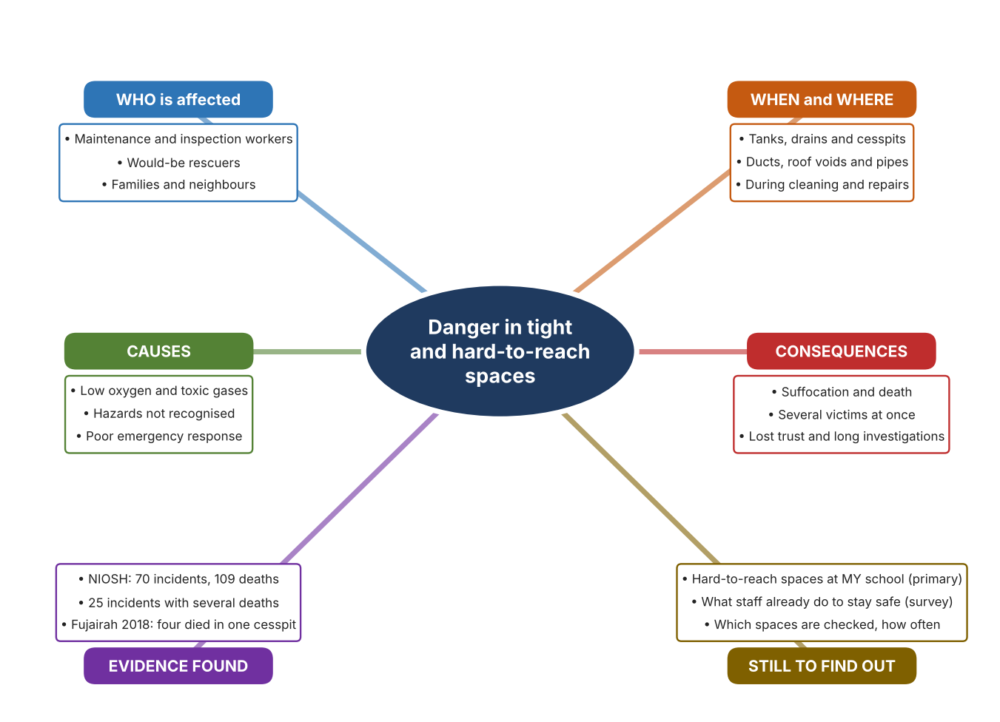
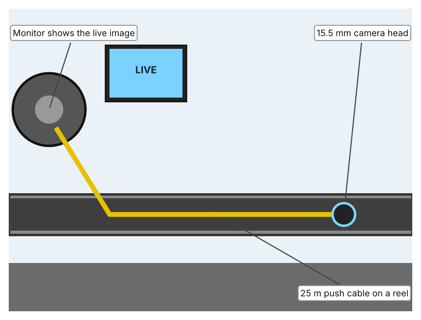
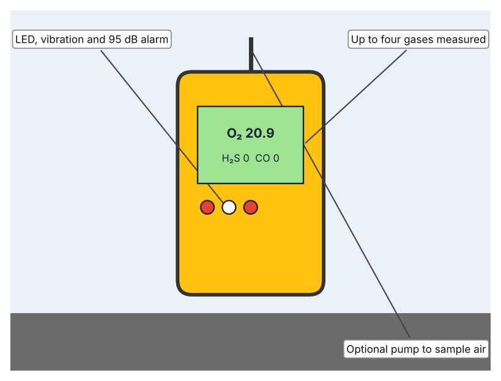
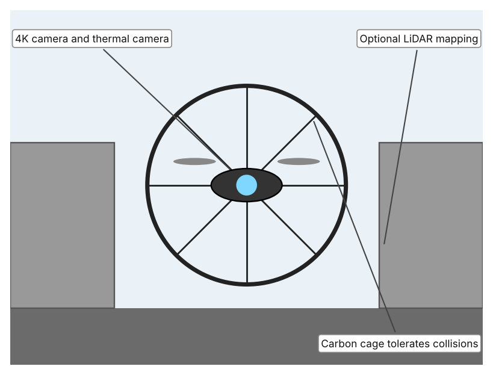

A1 · Design need
Identify and explain the problem faced by your client and community.
My client is the Facilities and Maintenance Team of a Dubai school, represented by the Facilities Manager. The team looks after water tanks, drains, air ducts, roof voids and pipework that are narrow, dark and hard to reach. The team is concerned that inspecting or repairing these spaces puts people in danger from things they cannot see or reach easily, and it needs the risk to staff, and to anyone who tries to help them, to be reduced.
The people most affected are maintenance and cleaning staff who enter or work near tight spaces. A second group is anyone who tries to help a person in difficulty, because the instinct to rescue a colleague or family member can place a second person in the same danger. Students and teachers are affected indirectly, because poor inspection can lead to leaks, blocked drains or unsafe water systems.
The need is real because incidents tend to happen quickly and to involve more than one person. The US National Institute for Occupational Safety and Health investigated 70 confined-space incidents that caused 109 deaths, and 25 of the incidents killed more than one person; the hazards included oxygen deficiency, toxic gases and flammable air, and the contributing factors were failures to recognise the hazards and inadequate emergency response (NIOSH). In September 2018 in Fujairah, a 50-year-old father fell into a cesspit that he was cleaning, and his two sons and son-in-law went in one after another to rescue him; all four died from noxious gases (Ali).
Figure 1 summarises the key numbers. The NIOSH report is from 1994 and refers to the United States, so I treat it as evidence of a pattern that I need to check against my own school. In my own words: the most dangerous part of a hidden hazard is that people do not see it until it is too late. Figure 2 is my mind map of the problem.
320 words


A2 · Research plan
Six research questions of different types, each with a priority, a research type and evidence.
| # | Question | Priority | Primary / secondary | Evidence | Brief answer |
|---|---|---|---|---|---|
| 1 | Factual: How many people die in confined-space incidents, and how many incidents involve more than one death? | High | Secondary | NIOSH report, 1994 (Appendix A, Source 1) | 70 incidents caused 109 deaths; 25 of the 70 incidents involved more than one death. |
| 2 | Factual: What happened in a recent UAE confined-space tragedy, and who died? | High | Secondary | Gulf News, 15 Sept. 2018 (Appendix A, Source 2) | A father fell into a cesspit in Fujairah; his two sons and son-in-law entered one after another to rescue him. All four died of noxious gases. |
| 3 | Conceptual: Why are low oxygen and toxic gases dangerous, and how can they be detected before a person enters a space? | High | Secondary | NIOSH, 1994 (Appendix A, Source 1); Ventis MX4 page (Source 4) | NIOSH lists oxygen deficiency, toxic gases and flammable air as hazards. Portable monitors measure several gases at once (for example O2, CO, H2S and flammable gas) and sound an alarm. |
| 4 | Debatable: Is the best way to reduce risk to avoid entering these spaces or to make entry safer? | Medium | Secondary | Appendix A, Sources 1, 3, 4 and 5 | Avoiding entry removes the hazard but the space may still need inspection; safer entry keeps people in danger. My view: look from outside first and enter only when it is necessary and the air is tested. |
| 5 | Debatable (challenges my assumption, UAE source): Do rescuers know the danger, so are rescues really a cause of extra deaths? | High | Secondary | Gulf News, 15 Sept. 2018 (Appendix A, Source 2); NIOSH, 1994 (Source 1) | In Fujairah three would-be rescuers died after entering the same pit. NIOSH lists inadequate emergency response as a factor. Conclusion: good intentions are not protection, so rescuers also need information and a way to act without entering. |
| 6 | Factual (primary): Which hard-to-reach spaces exist at our school, and what do staff do to stay safe? | High | Primary | Own walk-through from outside the spaces and staff survey (Appendix A, Sources 6 and 7) | [Student data needed: write the counts from your walk-through and survey averages, then two sentences on the main pattern. Look from outside only; never enter any tank, drain or duct.] |
A3 · Existing products
Three significantly different products, each analysed with ACCESS FM, with pros and cons.
Product 1: Push-cable pipe inspection camera (RIDGID SeeSnake NANOreel)

Illustration by the author based on “Ridgid Inspection Camera SeeSnake NANOreel,” Galaxus (Appendix A, Source 3). [Student: replace with a photo from the source, cited MLA 9]
Product 2: Portable multi-gas monitor (Industrial Scientific Ventis MX4)

Illustration by the author based on “Ventis MX4 Multi-Gas Monitor,” TENAQUIP (Appendix A, Source 4). [Student: replace with a photo from the source, cited MLA 9]
Product 3: Caged inspection drone (Flyability Elios 3)

Illustration by the author based on “Elios 3 Tech Specs,” Flyability (Appendix A, Source 5). [Student: replace with a photo from the source, cited MLA 9]
ACCESS FM analysis
| ACCESS FM | Product 1 | Product 2 | Product 3 |
|---|---|---|---|
| Aesthetics | Industrial reel and monitor kit; styling is not described (Galaxus). | Rugged yellow body with a backlit display; the page calls it “rugged yet lightweight” (TENAQUIP). | Round carbon cage around the flying body; the page describes the cage, not looks (Flyability). |
| Cost | CHF 5,155 for the inspection kit; camera and adapter sold separately (Galaxus). | US$1,385 per unit (TENAQUIP). | Price not listed (Flyability). |
| Customer | Plumbers and inspectors looking inside pipes from outside. | Workers entering or approaching confined spaces, and their supervisors. | Inspectors who need images and maps of spaces too dangerous to enter. |
| Environment | Waterproofing is not stated (Galaxus). | Battery lasts about 20 hours on a charge; works from –20 to 50 °C (TENAQUIP). | Battery gives 11.5 minutes of flight (9.1 with LiDAR) (Flyability). |
| Size | Head 15.5 mm; cable 25 m; 5.5 kg (Galaxus). | 182 g without pump; 103 × 58 × 30 mm (TENAQUIP). | 48 × 38 cm; about 1.96 kg (Flyability). |
| Safety | Keeps a person outside the pipe; works from 25 mm pipes. Bystander view: nobody is put at risk. | Alarms for gas hazards before entry. Bystander view: protects the worker who carries it and the rescuer who follows. | Cage survives bumps up to 2 m/s. Bystander view: avoids sending a person in at all. |
| Function | Pushes a camera along a pipe and shows a live image; a 512 Hz transmitter locates the camera from above. | Measures up to four gases at once, with an alarm when readings pass set thresholds. | Flies through a confined space, filming in 4K and thermal, with optional LiDAR for mapping; range 500 m in line of sight. |
| Materials | 7.2 mm flexible cable; head materials are not stated (Galaxus). | Polycarbonate case with rubber overmold (TENAQUIP). | Carbon-fibre cage (Flyability). |
Pros and cons
| Product 1 | Product 2 | Product 3 | |
|---|---|---|---|
| Pro | Cheap compared with other robots, gets images from inside a pipe, and locates the camera from above. | Detects the invisible hazard directly, is light and can be worn by the person at risk. | Reaches large or complex spaces, protects people from entering, and gives 4K, thermal and 3D data. |
| Con | Only suits pipes and cannot detect gas; costs CHF 5,155 without camera or monitor. | Only measures air; it does not inspect the space or help a person who is already in trouble. | Short battery life and no listed price; needs a trained pilot and a clear line of sight. |
A4 · Design brief
Restate the need, summarise the research and the existing products, and state the design intent.
My client, the Facilities and Maintenance Team of a Dubai school, needs the risk to staff, and to anyone who tries to help them, to be reduced when they inspect or repair hidden, narrow or hard-to-reach spaces. The hazard is real: in 70 investigated confined-space incidents, 109 people died and 25 incidents killed more than one person (Appendix A, Source 1). In Fujairah in 2018, a father and the three family members who tried to rescue him all died in a cesspit from noxious gases (Appendix A, Source 2).
My research shows that the danger is often invisible and that good intentions are not protection. NIOSH lists oxygen deficiency, toxic gases and flammable air as the main hazards, and says that failure to recognise the hazard and inadequate emergency response are major factors (Appendix A, Source 1). The Fujairah case shows that people entered one after another without knowing the air was dangerous (Appendix A, Source 2). My debatable questions led me to decide that people should look from outside first and enter only if necessary and after the air has been tested. The NIOSH report is from 1994 and from the United States, so I will check it against my own school using my walk-through and survey (Appendix A, Sources 6 and 7).
I analysed three very different existing solutions. A push-cable pipe camera has a 15.5 mm head and a 25 m cable that sends a live image, but it costs CHF 5,155 and cannot detect gas (Appendix A, Source 3). A portable multi-gas monitor measures up to four gases and sounds a 95 dB alarm, costs US$1,385 and weighs 182 g, but it only measures the air (Appendix A, Source 4). A caged drone flies through confined spaces with a 4K and thermal camera and tolerates collisions at 2 m/s, but it flies for only 11.5 minutes and its price is not listed (Appendix A, Source 5). They give me three ideas for inspiration: look from outside, measure the invisible hazard, and fly where people should not go. Each has a weakness that another covers.
My design intent is therefore to create a solution that lets people inspect hard-to-reach spaces, or learn what is wrong inside them, without putting a person at risk. It must be affordable for a school, simple for a trained staff member to operate, able to work in tight, dark and wet conditions, and safe in itself. I have deliberately not fixed what form it will take. That decision will be made in Criterion B, after I analyse my own walk-through and survey against the evidence in Appendix A.
436 words
Appendix A · Research notes and sources
Secondary sources in MLA 9, with notes and where each source is used.
| # | Source (MLA 9) | Key notes | Used in |
|---|---|---|---|
| 1 | National Institute for Occupational Safety and Health. Worker Deaths in Confined Spaces: A Summary of Surveillance Findings and Investigative Case Reports. NIOSH, 1994 (Publication 94-103), stacks.cdc.gov/view/cdc/209650. Accessed 21 Oct. 2026. | 70 incidents, 109 deaths; 25 with more than one death; hazards include oxygen deficiency, toxic gases and flammable atmospheres; factors: unrecognised hazards and inadequate emergency response. Report is from 1994. | A1; A2 Q1, Q3, Q4 and Q5; A4. |
| 2 | Ali, Aghaddir. “Four of a Family Die after Entering Cesspit.” Gulf News, updated 15 Sept. 2018, gulfnews.com/uae/four-of-a-family-die-after-entering-cesspit-1.1574829. Accessed 21 Oct. 2026. | Fujairah. A 50-year-old man fell into a cesspit he was cleaning; his two sons (24 and 23) and son-in-law (37) entered one after another. All four died of noxious gases. | A1; A2 Q2 and Q5; A4. |
| 3 | “Ridgid Inspection Camera SeeSnake NANOreel, Cable Length 25 m, Camera Head Ø 15.5 mm with Transmitter.” Galaxus, galaxus.ch/en/s4/product/ridgid-inspection-camera-seesnake-nanoreel-cable-length-25-m-camera-head-155-mm-with-transmitter-en-45378751. Accessed 21 Oct. 2026. | CHF 5,155; 25 m cable; 15.5 mm head; 5.5 kg; pipes from 25–30 mm; 512 Hz transmitter; camera and monitor sold separately. | A2 Q4; A3 Product 1; A4. |
| 4 | “Industrial Scientific Ventis MX4 Multi-Gas Monitor, 4 Gas.” TENAQUIP, tenaquip.com/product/industrial-scientific-ventis-mx4-multi-gas-monitor-4-gas-co-h2-h2s-lel-no2-o2-so2-vts-k1232100101-hz859. Accessed 21 Oct. 2026. | US$1,385; up to four gases; 182 g (380 g with pump); 95 dB alarm; about 20 h battery; –20 to 50 °C; pump for confined space entry. | A2 Q3 and Q4; A3 Product 2; A4. |
| 5 | “Elios 3 Tech Specs.” Flyability, mfe-is.com/wp-content/uploads/2024/12/Elios-3_tech-specs.pdf. Accessed 21 Oct. 2026. | About 1.96 kg; 48 × 38 cm; carbon cage; 11.5 min flight (9.1 with LiDAR); 4K camera and thermal camera; 500 m line-of-sight range; tolerates 2 m/s impacts; price not listed. | A2 Q4; A3 Product 3; A4. |
| 6 | Primary: hard-to-reach spaces walk-through sheet, completed by the student on [date]. Accessed own data. | [Student: summarise your counts.] | A2 primary question; A4. |
| 7 | Primary: survey of [number] people, completed on [date]. | [Student: summarise your averages.] | A2 primary question; A4. |
Primary research instrument 1: hard-to-reach spaces walk-through sheet
Student walks round the school and looks at hard-to-reach spaces from outside only.
| Space | Type (tank, drain, duct, roof void) | Warning sign (Y/N) | Locked or covered (Y/N) | Checked how often | Notes |
|---|---|---|---|---|---|
| Space 1 | |||||
| Space 2 | |||||
| Space 3 | |||||
| Space 4 |
Primary research instrument 2: survey
Rate each statement from 1 (strongly disagree) to 5 (strongly agree). Collect responses with permission and record no names.
| Statement | 1 | 2 | 3 | 4 | 5 | Total responses |
|---|---|---|---|---|---|---|
| I know which spaces at school are dangerous to enter. | ||||||
| I can inspect our drains and tanks without entering them. | ||||||
| Staff know what to do if a colleague is in trouble inside a space. | ||||||
| We have equipment to check the air before anyone enters. |